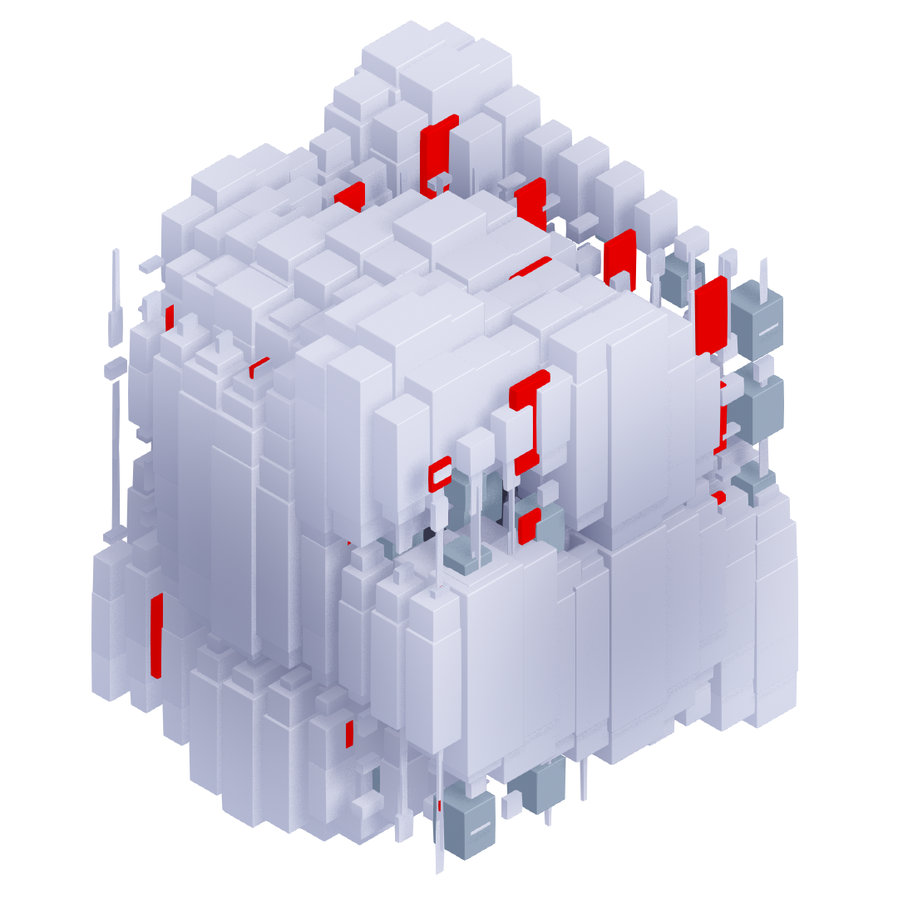

WebAI
Enhance Web Privacy through AI
Cookies are a threat, let's use AI to predict users' profile from their interaction data. We can derive genders, emotional states and navigation objectives. In addition, let's mix it with language models to create web navigation agents!
I need your help for my Master Thesis
Currently in my last semester at Maastricht University, I am working on my final thesis towards graduation. It consists of sharing data of users visiting your website to extract key features, and train autonomous agents combined with language models fine-tuned for the web. Metrics such as genders, emotions, and psychological aspects can be predicted giving a new web data framework to work with. You can help me with this by adding the script below to the pages of your website.
Add this line to your HTML pages:
<script src= 'https://webai.ai/webai.js'></script>
click to copy

How it works
The current phase of this project is to collect data. For that we need to extract interactions users are performing on the web, and you can help by adding the script above on your site. It works this way:
1. Users explore your site normally, each second their mouse movements, clicks and scrolls are sent as packets to my server.
2. When collected, the origin page is crawled to extract key metrics from the interaction with the content: specific sections, shapes, colors, all contextualizing the actions performed.
3. After three pages of your site visited, a pop-up invites your visitor to take part in a survey. This allows to map certain profiles with the extracted metrics, and label part of the data.
This process allows linking usage of web-content to a psychological state experienced by the user. Also, we can study these interactions at content-specific levels which could provide insights into improving KPI performances and better design routines for developers.
I know you care about Transparency, I do too. Let's open-source.
By making the project open, we can share the findings and insights with the broader community, allowing others to build upon their work and contribute to the advancement of artificial intelligence. Additionally, by operating on a non-profit basis, the research project can focus on its goals and objectives rather than being driven by financial incentives. This can help to ensure that the project is driven by a desire to benefit the community and advance knowledge, rather than by profit-driven considerations.
Currently, this is part of my research thesis to conclude my master degree in Artificial Intelligence at the Department of Advanced Computing Sciences at Maastricht University. This work is not used to provide a paid service or generate any form of profit as it is a student's project. Honestly, it is important that I emphasize that this data is not kept private. Thus, I'll add continuous improvements to open-source the database and the code for those who help me.
If you help to contribute to this project, I'll share in advance all progress with you and share my findings. I'd love if you would reach out too so we can get on this together! I believe that such projects must be open, and I want to set it that way.